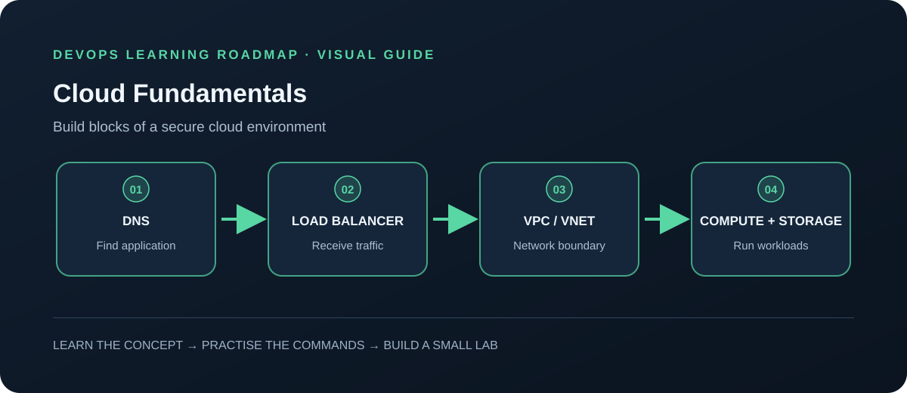

Region & availability zone
A region is a geographic area. Availability zones are separate locations within a region for resilience.
Cloud computing provides on-demand compute, storage, networking and managed services over the internet. Instead of owning physical servers, teams provision resources from a cloud provider and pay according to usage.
Cloud computing provides on-demand compute, storage, networking and managed services over the internet. Instead of owning physical servers, teams provision resources from a cloud provider and pay according to usage.
Modern applications run on cloud infrastructure. DevOps engineers need to understand identity, networks, compute, storage, availability, security and cost before automating them.

Users reach an application through DNS and a load balancer; compute instances run in private subnets and use managed storage and identity services.
A region is a geographic area. Availability zones are separate locations within a region for resilience.
Users, roles and policies define who can do what. Prefer short-lived role credentials and least privilege.
A logically isolated network with subnets, routes and security controls.
Virtual machines such as EC2 or Azure Virtual Machines run operating systems and applications.
Object, block and file storage solve different data needs.
Distribute traffic and map names to application endpoints.
The provider secures the cloud platform; customers remain responsible for their data, identities and configuration.
Run these in a lab environment first. Some commands require the related tool to be installed and configured.
| Command | What it does | When you use it |
|---|---|---|
aws sts get-caller-identity | Show the active AWS identity | Verify which account and principal your CLI uses. |
aws configure list | Show AWS CLI configuration sources | Troubleshoot profile and credential selection. |
aws ec2 describe-instances | List EC2 instance details | Inspect compute resources; scope output in real accounts. |
az account show | Show active Azure subscription | Confirm the subscription before making changes. |
az group list -o table | List Azure resource groups | Review resources grouped by lifecycle. |
az vm list -o table | List Azure VMs | Inspect virtual machine inventory. |
curl -I https://example.com | Test an endpoint | Check whether an application responds. |
terraform -version | Check Terraform installation | Prepare for infrastructure automation in the next stage. |
In a sandbox account, create a small network and VM using the console or CLI. Restrict inbound access, connect to the VM, verify a web endpoint and then delete the resources. Confirm no billable resources remain.
Tip: Save your notes, commands, screenshots and troubleshooting findings in a GitHub repository. Your learning record becomes part of your portfolio.
Checklist is for your current visit; it is not saved between devices or browser sessions.